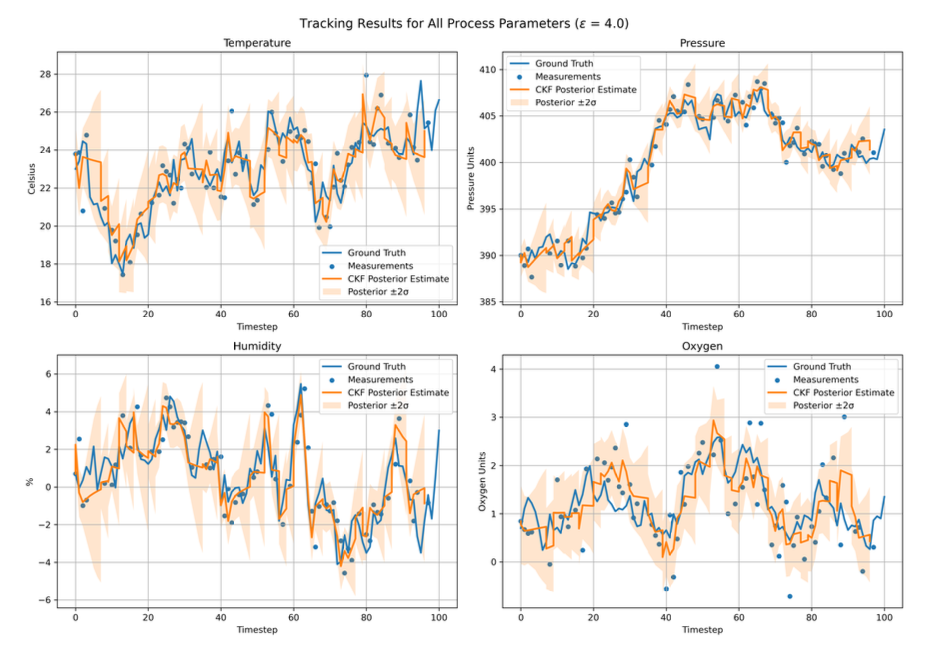

Differential Privacy and Kalman Filtering for IoT State Estimation
Investigated the privacy–utility tradeoff in IoT sensor data using Laplace noise and Cubature Kalman filtering, comparing state estimation performance on synthetic and real-world datasets.
May 01, 2026